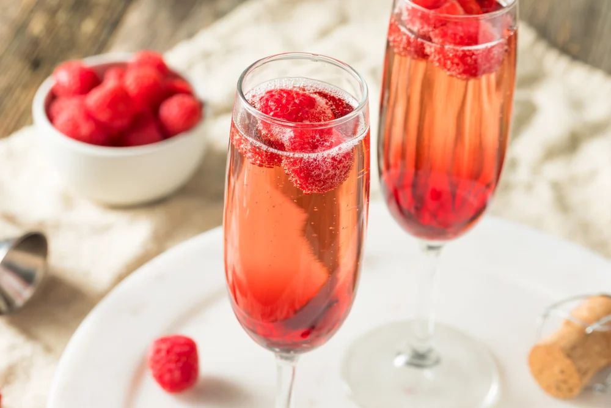
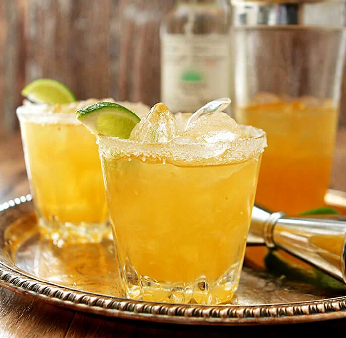
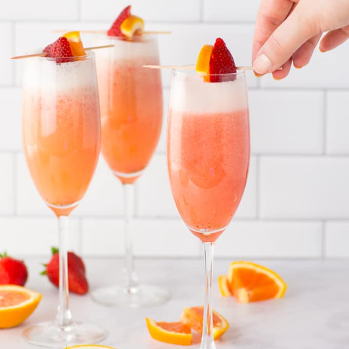

Mojito

Ingredients
- 6 mint leaves, plus additional for garnish
- 1 ounce (2 tablespoons) lime juice
- 1 ounce (2 tablespoons) simple syrup
- 2 ounces (4 tablespoons) white rum
- 2 to 4 ounces (½ cup) soda water
How to make
- In a cocktail shaker, muddle the mint leaves.
- Add the lime juice, simple syrup, and rum. Fill the cocktail shaker with ice and shake until cold.
- Place ice into a glass, and strain in the liquid. Top off the glass with soda water. Garnish with additional mint leaves.
Tequila Sunrise

Ingredients
- 2-ounce (4 tablespoon) tequila
- 4-ounce (½ cup) orange juice
- ¾ ounce (1 ½ tablespoon) grenadine syrup (purchased or homemade)
- Ice (try our clear ice!)
- For the garnish: Cocktail cherry, orange slice
How to make
- Fill a highball glass with ice. Pour in the tequila and orange juice and stir.
- Pour the grenadine into center of the drink and it will sink to the bottom. Stir gently for sunrise gradient effect.
- Garnish with an orange slice and cocktail cherry.
Kir Royale

Ingredients
- 1 ounce crème de cassis (or substitute Chambord or crème de mure)*
- 4 ounces sparkling wine** (Champagne, Prosecco, or other)
- Raspberries, for garnish (optional)
How to make
- Pour the crème de cassis, Chambord, or crème de mure into a champagne glass.
- Top it off with the sparkling wine.
- Garnish with raspberries if desired. Serve immediately.
Casamigos Margarita

Ingredients
- 1 ½ ounces* Casamigos Tequila Reposado or Casamigos Tequila Blanco
- 1 ounce Cointreau
- ¾ ounce fresh lime juice
- Kosher salt or flaky sea salt, for the rim
- For the garnish: Lime wedge
- Clear ice, for serving
How to make
- Cut a notch in a lime wedge, then run the lime around the rim of a glass. Dip the edge of the rim into a plate of the salt.
- Place all ingredients in a cocktail shaker with 4 ice cubes and shake until cold.
- Strain the margarita into the glass with the salted rim. Fill the glass with clear ice and serve.
Strawberry Mimosa

Ingredients
- 2 cups (1 pint or 12 ounces) fresh strawberries (or frozen strawberries*)
- 1 cup orange juice
- 1 750mL bottle Prosecco, champagne or other sparkling wine
How to make
- Remove the tops from the strawberries.
- Add them to a blender with the orange juice and blend.
- For each drink, add ½ cup of Prosecco to the champagne flute.
- Then pour in ¼ cup of the strawberry puree.